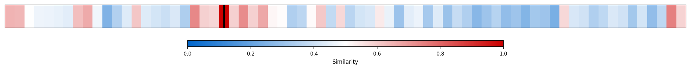
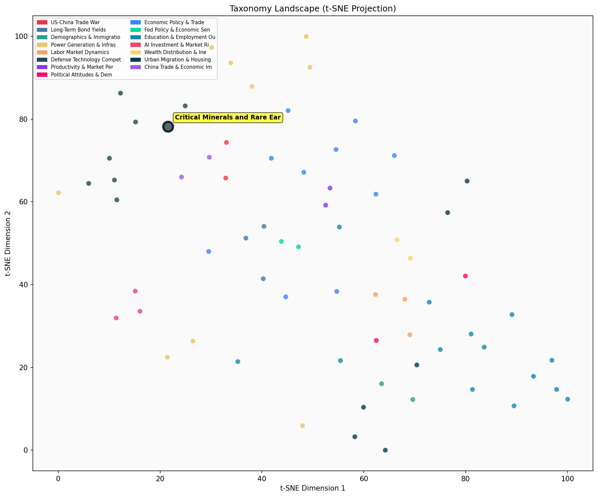

Description
This subcluster examines the strategic control and supply chain vulnerabilities of critical minerals and rare earth elements essential for defense technologies. Articles analyze China's dominant market position, export restrictions, and use of mineral dependencies as geopolitical leverage. Coverage includes US and allied efforts to diversify supply chains, establish domestic mining operations, build strategic stockpiles, and reduce Chinese dependencies. Sources range from trade policy analysis to mining industry reports and government procurement initiatives. Unlike sibling clusters focusing on semiconductor manufacturing or military spending, this subcluster emphasizes upstream raw material control and resource security as foundations of technological competition.
Similarity to All 70 Subclusters
Each cell represents a subcluster. Color intensity shows similarity (blue=low, red=high). Black line marks current subcluster position.
Relationship to Primary Clusters
Average similarity to each of the 15 primary clusters. Larger area = stronger relationship to that cluster.
Taxonomy Landscape
All 70 subclusters positioned by similarity (t-SNE). Current subcluster highlighted with label. Click to enlarge.
Network Connections
Current subcluster at center, connected to related subclusters. Line thickness = similarity strength.
Most Representative Articles
-
1. New Chinese export controls will allow it to manage exports of foreign-manufactured magnets that con
-
2. China has weaponized its dominance in rare earths trade to shift the trade negotiation balance, demo
-
3. China's precisely targeted rare earth export controls were "probably the key factor in forcing Washi
-
4. China is limiting rare earths export volumes to prevent foreign stockpiling of rare earths and downs
-
5. Facing strict Chinese export controls on magnets, US & EU auto makers may consider shifting some par
Edge Cases (Boundary Articles)
-
1. A lithium deposit in a volcanic crater on the Nevada–Oregon border is likely the world's largest.This article is borderline because while it discusses lithium (a critical mineral essential for defense and energy technologies), it focuses primarily on a geological discovery and potential mining timeline rather than strategic supply chain controls, market dominance, or geopolitical vulnerabilities that define the cluster's core theme. The article lacks the strategic/control analysis aspect that characterizes the subcluster, making it more about resource discovery than critical mineral supply chain dynamics.
-
2. In its effort to gain approval for the acquisition of US Steel, Nippon Steel is considering grantingThis article is borderline for the "Critical Minerals and Rare Earth Controls" cluster because while it involves foreign control of a strategic U.S. industrial asset (steel production), it focuses on corporate governance and acquisition structures rather than the supply chain vulnerabilities or strategic control of critical minerals that define the cluster. The content is more aligned with foreign investment and trade dynamics than with the specific mineral resource control issues the cluster examines.
-
3. In 1901, US Steel’s market cap was 6.7% of US GDP. Prior to Nippon Steel’s recently announced acquisThis article is borderline because while it discusses the decline of a major US steel company, it focuses on corporate innovation failures and market performance rather than strategic control of critical minerals or rare earth supply chain vulnerabilities that define the cluster. The content is more about industrial/corporate history and innovation patterns than the geopolitical and supply chain security concerns central to critical minerals analysis.
Original Dendrogram